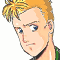
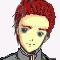
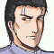
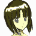
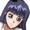
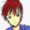
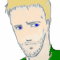
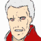

ナレーション 「体制勢力、議会・セグメント連合と、反体制勢力、エクレシアの戦いは、膠着状態に入っていた。それは、その陰に潜むユニオンの仕組んだ戦争に他ならない。アベルは、ユニオンの下位組織グレイゾンに利用され、戦い続けて来た」
「その事実に気付いた、アベルの脱走から、半年――」
タイトル
|
− Participation − |
セツルメント内。山の中の軍事工場。
身を隠しているサイファーと、フォートレス型のヴォーテックス。サイファーがヴォーテックスの尻を支えている形。
 ケネス 「ハインツ！ 準備はイイな。相手は動いてねえんだぞ。外すなよ」
ケネス 「ハインツ！ 準備はイイな。相手は動いてねえんだぞ。外すなよ」

ハインツ 「わかってるよ。うっさいな。いつまでもヒヨッコ扱いするなよ」
ケネス 「その意気だ。が、無駄口叩いてないで集中しろ」
ハインツ 「ケネスこそ集中しろよ！ 時間だ！ 仕掛けるぞ！ ８・・・７・・・６・・・５・・・４・・・３・・・２・・・１・・・・ゼロ！！」
ヴォーテックスの主砲が工場を破壊する。
ケネス 「行くぜ」
工場内。
 兵士 「てっ、敵襲だ！！」
兵士 「てっ、敵襲だ！！」
 兵士 「うあッ！ アレか、噂の・・・、軍需産業を潰して回る海賊・・・！！」
兵士 「うあッ！ アレか、噂の・・・、軍需産業を潰して回る海賊・・・！！」
兵士 「と、とにかく避難と防衛を！」
ケネス 「はン。まだまだ警備が甘いね。どれだけ舐められてンだ？ 俺達はよ？」ハインツ 「ハインツ様が来てやったってのに、お出迎えもナシかい！？」
ケネス 「調子に乗って下手ァ打つなよ、ハインツ。連中が舐めてくれてるウチに痛打を喰らわせるのが目的なんだぜ？」
ハインツ 「はいはい・・っと、来た来た！ Ｍマシン６機！」
ケネス 「後方支援ヨロシク！ 先に行くぜ！」
ハインツ 「あああっ、ケネス！ 抜け駆けするなよ！ こっちはマシンに変形してな・・・！！」
ケネス 「お前は砲座でイイの。・・・そんなデカブツが前に出てどうする気だよ」
軽口を叩きながら、マシンを撃墜していくケネス。
ハインツ 「ちっくしょぉ！ 自分だけッ！」
その戦闘の様子を眺めている大型車。中には人影が２つ。

カイン 「ふうん・・・」

イブレイ 「よく見ておけ、カイン。当面の敵はコイツらになる」カイン 「あっはッ。カーロさんが色々とうるさいから、ものすごく警戒してたのに・・・、案外、大した事ないですよね」
イブレイ 「甘く見るな。エナと対等に戦った実績もある」
カイン 「へぇ、エナとね。・・・じゃあ、僕が今から、対等以上に戦うよ」
イブレイ 「奴らが宇宙に出るまで待て。アサルトのＤＲＥＳＳは宇宙空間以外では仕様に耐えん」
カイン 「やだなあ、イブレイさん。それじゃまるで、ＤＲＥＳＳなんかに頼らないと勝てないみたいじゃないですか」
イブレイ 「念には念を、だ。そろそろ移動するぞ」
カイン 「そうですね。遅れたら元も子もないですから」
ケネス 「よっしッ。粗方は破壊した。引き上げるぞ」ハインツ 「ケネスだけ撃墜数稼いで撤退かよ！」
ケネス 「シュミレーターじゃねえってぇの」
ハインツ 「俺ァ、ケネスのことは尊敬してるよッ！ だけどさ、いつまでもケネスのケツにいる俺じゃねぇんだぜ！ エース・パイロットの座は・・・」
ケネス 「わかってるよ。わかってるから、脱出時には油断してくれンなよ。連中だって、狼藉者を簡単に逃がしちゃくれないだろうぜ」
ハインツ 「確かにね。俺達の出現予想範囲だってのに、警戒が甘すぎる」
ケネス 「わかってるならいい。・・・抜けるぞ！」
ドックへと繋がるトンネルを走り抜ける二機。
オデッセイア
モニターに映る新聞記事。
 ケーラー 「おやおや、また長官殿には芳しくない記事だな」
ケーラー 「おやおや、また長官殿には芳しくない記事だな」
 ＡＪ 「ここいら辺りで汚名を返上しないと、どうやら私は本当にクビだよ」
ＡＪ 「ここいら辺りで汚名を返上しないと、どうやら私は本当にクビだよ」
ケーラー 「海賊？ テロリスト？ 襲撃されたのは細菌兵器工場との疑いも・・・。くっくく。しかも、写真に写ってるのは、半年も行方をくらましてたソードケインだ」
ＡＪ 「それだけじゃない。イヴリンのクロスボウと戦ってる様子まで撮影されてる・・・。草の根の情報網からとは言え、マスコミ関係者に間違いなく背信者がいる・・・」
ケーラー 「あんたがそうであるように、ユニオンに楯突く輩は何処にでもいるって事さ。組織の内外は別にして、な」
ＡＪ 「楯突く・・・か。それにしても、あの子が私に牙を剥くとはね。カインはホセの御寵愛だ。手駒不足は不利だな」
ケーラー 「アベルが出てくるなら、こちらにも手段はある」
ＡＪ 「・・・使えるのか？ あの子は？」
ケーラー 「当然だ。あれでもウチの出身だからね。ＪＡＣ兵器の順応は、イヴリンの数倍だよ」
そう言いながら、モニター画像を操作するケーラー。
何もない白い部屋が映る。
ＡＪ 「とても、そうは思えんが・・・」
ケーラー 「パラサイト型・・・。力のある者の庇護下に隠れ、生き延びる・・・。生きるために必要なエネルギーを極力少なくする・・・。生命としては当然の選択だよ」
ＡＪ 「その庇護下から引きずり出された時、生き延びる能力があるのか、ないのか・・・。あんな子供に」
モニターには、何もない部屋。白いベッドの上に座る少女。

？？？ 「・・・・・・」
ケネス 「・・・あン？ やけにアッサリと逃がしてくれるじゃねえか・・・。キナ臭せぇコトこの上ないねェ」ハインツ 「俺らの戦力にびびって、追って来れねえんじゃーないの？」
ケネス 「やっこさんがそんなに甘いとは思えないけどね。・・・来た！」
後方から、強力なビーム兵器のような黄金の光の塊が飛んでくる。
ハインツ 「んなッ！？」
ケネス 「なんだ今の光は！？ ビームか！？」
ハインツ 「ビっ・・・ビームじゃない！ 引き返してくる！」
ケネス 「散らばれ！ 止まるな！」
ハインツ 「うわッ！？」
飛び回り、Ｕターンしてはぶつかってくる発光体。
直撃はないが、かすめるたびに吹き飛ばされる二機。
ケネス 「どうやら俺ら・・・、新兵器の実験台？」
ハインツ 「何だよこのッ！ ビームシールドが体当たりしてくるような・・・！」
ケネス 「とにかく軸をずらせ！ 変形して一定方向に逃げるな！ 高速な分だけ、回避すりゃ時間が稼げる！ ・・・とは言ったモノの・・・」
ケネスの放つ攻撃が幾つか命中するが、効いている様子はない。
ハインツ 「何なんだ！？ コイツ！！」
光の塊。Ｇ-アサルトの中。
カイン 「なんだ・・・。やっぱりＤＲＥＳＳを使う程じゃなかったな。まぁいいや、もうチョット間合い詰めてあげる」
必死に回避するも、段々と間合いを詰められる。
ケネス 「うっひょぉ、コイツ・・・、まだ余裕があるのかよ・・・！ 遊んでやがる・・・」
カイン 「ヴォーテックスの方はド素人か。・・・墜ちてもらうね」
攻撃対象がヴォーテックスに絞られる。
ハインツ 「うわッ！ うわわわっ！」
ケネス 「ハインツ！ コイツはシャレにならねえ！ 次のはギリギリでかわせ！ かわせたら直後に変形して離脱しろ！ いいな！」
ハインツ 「かわせって言っても！」
シールドを展開しつつ、何とか直撃は避けるヴォーテックス。
カイン 「あはッ、避けた。・・・舐めすぎたってイブレイさんに怒られちゃうね」
ハインツ 「ごめんッ！ ケネス！」
フォートレス型に変形して真っ直ぐ離脱するヴォーテックス。
カイン 「ん。逃げるの？ 悪いけど、スピードじゃ、アサルトからは・・・」
ハインツ 「くっ！ 最大出力でもッッ！？」
カイン 「逃げられないよ。ね？」
あっという間にヴォーテックスを追い抜くアサルト。
その時、ケネスのサイファーが何もない空間にロング・ビーム・ライフルを流して連射。
全弾が光に的中して、軸をずらされる。
ケネス 「弱い者イジメしてると、遊んでやらねえぜ」
ハインツ 「ケネス・・・！ ごめんッ」
そのまま離脱するヴォーテックス。
カイン 「そんな大砲をアサルトに当てるなんて・・・。さすがにホセさんが言うだけの実力・・・。いいよ。ヴォーテックスはいつでも沈められるんだからね！」
アサルトを包む光が失せて、中から機体が姿を現す。
ケネス 「こっちへ・・・！ ・・・！ コイツ・・・！ Ｇシリーズかぃ！」
カイン 「見せてあげる。これがＧ-アサルト。君らの乗ってる機体と同じシリーズだよ。まあ、同じＧシリーズでも、アサルトは別格なんだけどね」
言うと同時に、再び光が発生。高速でぶつかってくる。
ケネス 「この・・・ッ！ 全身を包んでるのはビームシールドか！？」
カイン 「ホントはＤＲＥＳＳナシでもやれるんだけどね。エースパイロット相手のデータが欲しいってさ」
ケネス 「だあっ！ 段違いのパワーじゃネエかッッ！？ 正面からならッ！」
攻撃を当てるも、一切受け付けない。
ロング・ビーム・ライフルを正面から当てるが、簡単に受け流されてしまう。
カイン 「センスはイイけど、相手が悪かったね」
ケネス 「何ひとつ通じないってかッ！？」
カイン 「ゲーム・オーバー」
と言った瞬間、アサルトが強力なビーム攻撃に弾かれ、コースアウトする。
カイン 「何ッ！？」
撃ったのはヴォーテックスのハインツ。
ハインツ 「舐めンな！ 俺がケネスを見捨てて逃げる訳ねーだろーが」
ケネス 「助かったぜ、相棒。逃げろなんて言って悪かったな」
ハインツ 「あァ！？ 本気で言ってたのか！？」
カイン 「あっは！ すごいよ！ お前ら！ 僕にこれだけケチつけた連中はお前らが初めてだ！ 壊してやる！ 丁寧に壊してやる！」
ケネス 「また来るぞ！」ハインツ 「げっ・・・！ って、え？」
アサルトを包む光が急激に落ち始める。
モニターがエネルギー不足を伝える。
カイン 「くッ！？ ＤＲＥＳＳが出力不足！？ 何でだよ！ まだ５分は戦えるはずだろ！ このポンコツがッ」
ハインツ 「光が消えた・・・！ ケネス！？ チャンスだッ！」
ケネス 「離脱が先だ。あのシールドがなけりゃ勝てるって相手じゃない。行くぞ」
ハインツ 「でも！」
ケネス 「聞き分けのねえガキは嫌いだって、アンが言ってたぜ」
ハインツ 「だけど！」
ケネス 「後方に弾幕張りつつ撤退。・・・ＯＫ？」
カイン 「くそッ！ ＤＲＥＳＳなしだと速度も出ないじゃないか！」
ケネス 「撤退撤退・・・、しっかし、ついに第２期Ｇシリーズのお出ましか・・・。いよいよ重い腰が上がったな・・・」

アイキャッチ「Ｇ−ＧＵＩＬＴＹ」
アンセスター艦・マトリックス。マシン用ドック。
走ってくる黒髪の少女。

アン 「ケネス、帰ったって？」
 ジーン 「おお、かなり手酷くやられてたぜ。修理する身にもなれってえの・・・」
ジーン 「おお、かなり手酷くやられてたぜ。修理する身にもなれってえの・・・」
アン 「どうせハインツの馬鹿が足引っ張ったんでしょ！？ 仮眠室？」
ジーン 「おぅ、ついでに・・・って、気の早ぇ嬢ちゃんだ」
パイロット用仮眠室。簡易ベッドに横たわるケネス。
アン 「ケネス！」
ハインツ 「よおっ、スナン！ 俺の武勇伝聞く？ 今回、ピンチに陥ったケネスを助けたのは他でもないこの俺様、ハインツ・アイヒマンだったのね！ 相手は驚異の・・・」
アン 「ケネス！？ 怪我したの？」
ケネス 「いんや。機体に振り回されて筋肉痛」
ハインツ 「スナン？」
アン 「筋肉痛？ あたしがマッサージしてあげよっか？」
ケネス 「有り難いけど、辞退するわ。後ろの人が怖い目で見てる」
アン 「こんなトサカはどうでもいいから！」
ハインツ 「・・・トサカ」
ケネス 「はっは。うまいこと言うな。アン」
ジーン 「おう、賑やかなところを邪魔して悪いがな。ケネス、ボッシュが呼んでるぜ」
ケネス 「ほいよ。じゃあな、アン」
アン 「あっ・・・、もうっ」
ジーン 「モテモテだな、色男」
ケネス 「ま、ね。お子さまにゃ興味ねえけど・・・。入るぜ」
マトリックス・ブリッヂ。
 ボッシュ 「おう、ご苦労だったな、ケネス。ジーンから聞いた。第２期シリーズに出くわしたらしいな」
ボッシュ 「おう、ご苦労だったな、ケネス。ジーンから聞いた。第２期シリーズに出くわしたらしいな」
ケネス 「あ〜りゃハンパじゃねえや。手も足も出ねえんでやんの。実際、状況が違えば、逃げ出す事も出来なかっただろうぜ」
ボッシュ 「情報合戦も四分六ってトコだ・・・。のんびりしてると潰されるな。確実に」
ジーン 「・・・地球への降下、か。さすがに時期尚早じゃねえか？」
ボッシュ 「確かに、例のスポンサーから、資金は出てるが、レスポンスがない。迂闊に信用も出来んが・・・」
ケネス 「ブルーアンガーの撃沈。・・・その条件は満たしたはずだぜ。なのに連絡もないなんてのは・・・」
ボッシュ 「資金は出てる」
ケネス 「いいぜ。俺は。連中相手に暴れられるなら、文句は言わねえよ」
ボッシュ 「答がどちらにせよ、決断は、予定にある基地の破壊が終わってからだ。それと、アーサーから連絡があった。アベルたちと合流すれば、戦力も補強される」
ケネス 「お。アベルね。ハインツよりは大人しくてイイね」
別のセツルメント。
ソードケインのコックピット。モニターにはアーサーが、その後ろにはシャヒーナが映っている。

アベル 「スタンバイできてます」

アーサー 「アベル。今回の作戦はわかってるな？ あくまでマスコミへの露出だ」アベル 「心得てます」
アーサー 「今の連中は、エクレシアの救世主として露出させてきたＧを海賊が使ってる事に苛立ちを感じてる」
アベル 「要するに、いやがらせをやるんですよね」
にこやかに言うアベル。アーサーの後ろでシャヒーナが笑いを抑える。
アーサー 「ぐっ・・・、まあ、そうだ。連中がマスコミを支配してるとは言っても、草の根ネットワークまでは管理できない。可能な限り露出すれば、民衆の志気が上がる」
アベル 「はい」
アーサー 「お前は一人で戦ってるんじゃない。わかるな？ ・・・それと、この間の研究施設破壊でこっちの動きは予測されてるだろうから、敵の警戒は強いはずだ。下手をすればまたＧシリーズが出てくる」
アベル 「はい。・・・アベル、行きます！」
同セツルメント内。
街の中を走行するオープンカー。
乗っているのは２人。運転席にイヴリン。助手席にエドガー。

エドガー 「休暇中に悪いな。不服だって顔に書いてあるぜ」
 イヴリン 「いえ。伝説の傭兵のお供が出来る事、光栄です」
イヴリン 「いえ。伝説の傭兵のお供が出来る事、光栄です」
エドガー 「ハ。寝てる間に、伝説になってたとはな。笑える話だ」
イヴリン 「・・・」
エドガー 「パイロット、辞めた方がイイぜ。おめえ、よ」
そう言いながら、あさっての方向を見ているエドガー。
イヴリン 「ッ！？」
エドガー 「不適合だ。いずれ墜とされる。そんなに感情にバラつきがあったんじゃあな」
エドガーの視線の先に、黒い点のような機影。
イヴリン 「お言葉ですが・・・！」
エドガー 「黙んな。予定より早いが戦闘だ」
振り返って、凄い形相で笑うエドガー。
イヴリン 「戦闘？ 何を言って・・・！？」
エドガー 「あそこに見える工事現場に行け」
工事地帯。
イヴリン 「は、はい。でも何で・・・」
エドガー 「質問してる暇があったら、とっとと走らせろ」
イヴリン 「くっ・・・！」
黙って走らせるイヴリン。
エドガー 「ふン・・・。やっぱりな。あの速度であの高度だ」
呟いたエドガーの視線の先に見えていた機影が、次第に大きくなる。
イヴリン 「マシン・・・！？ まさか、ソードケイン！？ あれが見えてたんですか！？」
エドガー 「黙って車を走らせな」
貧民街の市街地と、それを分け隔てるような監視塔。それを目指すソードケイン。
アベル 「よし。あのセグメントの監視塔を・・・」
アベル 「来た・・・！ マシン４機！」
出てきたマシンを迎え撃つアベル。
アベル 「市街地まで出てこないで！ 撃墜できなくなる！」
アベル 「ひとつ！ ふたつ！」
あっという間に、二機撃墜。
工事地帯に入ってきた車。
エドガー 「上出来だ」
走行中の車から飛び降りるエドガー。
イヴリン 「あッ！？」
エドガーは転げるようにして車から落ちると、転がりながら跳ね起き、そのまま作業中の工事用マシンに目掛けて走り出す。
工事用マシンに取り付くと同時に、ひょいと飛び乗って、作業員を蹴り落とす。
 作業員 「えあッ！？」
作業員 「えあッ！？」
エドガー 「ふン。戦闘には不適合だが・・・使い道ならある」
エドガーはそのまま、作業用マシンで出撃。
イヴリン 「そんな作業用マシンでＧに！？ 無茶苦茶よ！」
アベル 「みっつ！ ・・・最後！」
４機全てを撃墜する。いよいよ、監視塔を残すのみ。
アベル 「行くよ！」
監視塔に放ったビームが、投げつけられた鉄筋に防がれる。
アベル 「な、なに？」
もう一発、鉄筋がソードケインにぶつかる。
エドガー 「金を受け取った以上、手をこまねいて見ている訳にはいかんのでな」
アベル 「あれ・・・、作業用じゃないのか！？」
戸惑うアベル。
エドガー 「ぬるい！」
走りながらビルを蹴って、ソードケインの高度まで跳ね上がる作業用マシン。その攻撃を慌てて防ぐソードケイン。二機が絡まり合って、地上まで墜ちる。
アベル 「ビルを利用して！？」
エドガー 「油断が見える！」
離れたと思ったら、電柱を切り倒してアベルに向けて倒す。
アベル 「このパイロット・・・！」
イヴリン 「あんな作業用で・・・Ｇと渡り合うなんて・・・、まさか・・・、こんなに・・・」
電線を引っ掛けて鉄塔を倒す、ビルを遮蔽物にするなど、アベルを翻弄するエドガー。だが、次第にアベルの攻撃が近くなり始める。
アベル 「こいつ・・・ッ！」
エドガー 「今頃になって眼が覚めたか！ 戦闘用マシンなら、二度は墜ちたぞ！」
アベル 「こんな・・・！ 地形が全部、敵みたいじゃないか！」
エドガー 「ふン。さすがに、機体の性能差は大きいか」
アベル 「やりたくないけど・・・！」
アベルが機体を上昇させ、付近のビルを攻撃する。
爆炎と粉塵が舞い上がる。
エドガー 「気付いたか」
作業用マシンを捨て、コートで顔面を隠しつつ走り去るエドガー。
アベル 「これで・・・ッ！！」
作業用マシンの追撃がなくなってから、監視塔を狙撃するアベル。
車にいるイヴリンが、粉塵に眼を細める。
イヴリン 「あのアベルが・・・、民間のビルを乱射してまで・・・」
エドガー 「早く出しな。ビルの倒壊に巻き込まれるぜ」
振り返ると、後部座席にエドガー。
イヴリン 「は、はいッ！ ・・・い、いつの間に」
エドガー 「仕留め損なったな。・・・まあ、今回はリハビリって事で勘弁してもらうか」
ソードケインのコックピット。
アベル 「はあっ、はあっ・・・！」
アジト。
アーサー 「監視塔は破壊できたものの、今回のは、イメージ作戦としちゃ大失敗だな。あれじゃ、無差別テロだ」
アベル 「すみません」
アーサー 「状況は見てたから知ってる。・・・しかし、世論がそうは思っちゃくれないぞ」
アベル 「すみません」
アーサー 「しかし、アベルを圧倒するほど強いパイロットとは・・・、厄介そうなのが出てきたな・・・。まさかとは思うが・・・」
アベル 「・・・ミアやエナでも、ザカリアでもなかった・・・。あんな・・・、あんなに・・・」

ナレーション 「暗闇の中、アベルたちに襲いかかる魔の手。ユニオンは公権力を操ってまで、アベルたちを追い詰めようとする。そしてその頃、シャイロンはＲ商会との接触を試みていた。次回、『暗闇の暗殺者』 Ｇの鼓動が、今目覚める」